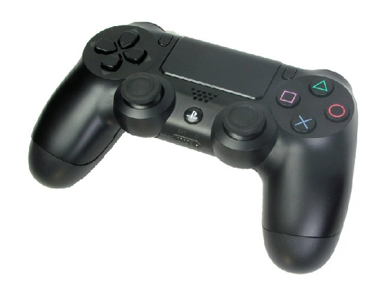
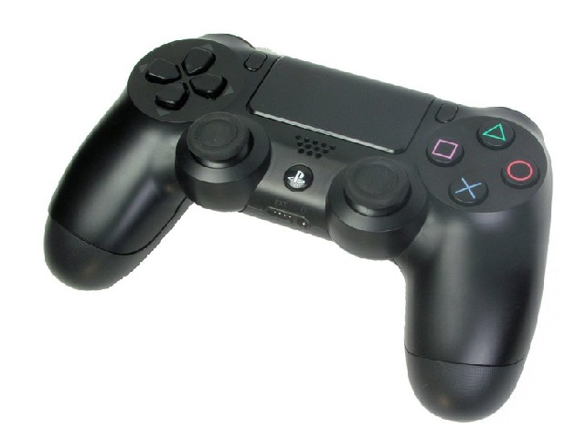

Joystick DualShock PS4
Precio: 8900$
 

Barra luminosa: Ve mucho más de tus juegos con la barra luminosa integrada que brilla en varios colores según la acción en el juego y ahora visible en el touch pad.
Carga de batería mediante USB: Carga la batería interna del control desde al puerto USB de tu PS4, el cual te permite cargar sin molestias mientras juegas.
Conector para auriculares estéreo: Escucha tus juegos en privado y siente cada explosión con un conector integrado de 3,5 mm para tus auriculares.
Sensores de movimiento: Domina el juego mientras un acelerómetro y un giroscopio integrados de alta sensibilidad detectan los movimientos, giros y rotaciones del control inalámbrico DUALSHOCK 4.
Altavoz incorporado: Lleva tus juegos al mundo real y escucha cada detalle con efectos de sonido que vienen directamente de tu control inalámbrico DUALSHOCK 4.